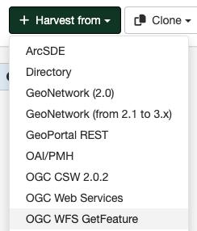

WFS GetFeature Harvesting
Metadata can be present in the tables of a relational databases, which are commonly used by many organisations. Putting an OGC Web Feature Service (WFS) over a relational database will allow metadata to be extracted via standard query mechanisms. This harvesting type allows the user to specify a GetFeature query and map information from the features to fragments of metadata that can be linked or copied into a template to create metadata records.
An OGC web feature service (WFS) implements a GetFeature query operation that returns data in the form of features (usually rows from related tables in a relational database). GeoNetwork, acting as a client, can read the GetFeature response and apply a user-supplied XSLT stylesheet to produce metadata fragments that can be linked or copied into a user-supplied template to build metadata records.
Adding an OGC WFS GetFeature Harvester
To create a OGC WFS GetFeature harvester go to Admin console > Harvesting and select Harvest from > OGC WFS GetFeature:

Providing the following information:
-
Identification
- Node name and logo: A unique name for the harvester and, optionally, a logo to assign to the harvester.
- Group: Group which owns the harvested records. Only the catalog administrator or users with the profile
UserAdminof this group can manage the harvester. - User: User who owns the harvested records.
-
Schedule: Scheduling options to execute the harvester. If disabled, the harvester must be run manually from the harvester page. If enabled, a scheduling expression using cron syntax should be configured (See examples).
-
Configure connection to OGC CSW 2.0.2
- Service URL: The bare URL of the WFS service (no OGC params required).
- Remote authentication: If checked, should be provided the credentials for basic HTTP authentication on the WFS server.
- OGC WFS GetFeature Query - The OGC WFS GetFeature query used to extract features from the WFS.
-
Configure response processing for wfsfeatures
- Language: The language that will be used in the metadata records created by the harvester.
- Metadata standard: The metadata standard to create the metadata. It should be a valid metadata schema installed in GeoNetwork, by default
iso19139. - Save large response to disk: Check this box if you expect the WFS GetFeature response to be large (eg. greater than 10MB). If checked, the GetFeature response will be saved to disk in a temporary file. Each feature will then be extracted from the temporary file and used to create the fragments and metadata records. If not checked, the response will be held in RAM.
- Stylesheet to create fragments: User-supplied stylesheet that transforms the GetFeature response to a metadata fragments document (see below for the format of that document). Stylesheets exist in the WFSToFragments directory which is in the convert directory of the selected output schema. eg. for the iso19139 schema, this directory is
GEONETWORK_DATA_DIR/config/schema_plugins/iso19139/convert/WFSToFragments. - Create subtemplates: Check this box if you want the harvested metadata fragments to be saved as subtemplates in the metadata catalog and xlink'd into the metadata template (see next option). If not checked, the fragments will be copied into the metadata template.
- Select template to combine with fragments: Choose the metadata template that will be combined with the harvested metadata fragments to create metadata records. This is a standard GeoNetwork metadata template record.
- Category for directory entries: (Optional) When fragments are saved to GeoNetwork as subtemplates they will be assigned to the category selected here.
- Validate records before import: Defines the criteria to reject metadata that is invalid according to XML structure (XSD) and validation rules (schematron).
- Accept all metadata without validation.
- Accept metadata that are XSD valid.
- Accept metadata that are XSD and schematron valid.
-
Privileges - Assign privileges to harvested metadata.
More about turning the GetFeature Response into metadata fragments
Within the root
Within a
Valid attributes on these elements and their function is as follows:
| Element | Attribute | Description |
|---|---|---|
| Record | Uuid | Uuid of the generated metadata record (optional - one will be assigned by the harvester otherwise) |
| Fragment | Id | Id of element in metadata template to replace/link from. Ignored when fragment is within a replacementGroup. |
| Uuid | Uuid to use for generated subtemplate (used to link to this subtemplate from metadata) | |
| Title | Title of fragment -- used as title of xlink | |
| ReplacementGroup | Id | Id of element in metadata template to delete, replace or link from to contained fragments |
Finally, two examples of how to harvest metadata from the Features of an OGC WFS harvester can be given using stylesheets and templates supplied with GeoNetwork.
Bundled GeoServer Boundaries Harvest example
This example assumes that you have installed the bundled GeoServer that comes with GeoNetwork. The end result of this example will be 251 ISO19139 metadata records that link in 1506 fragments (6 per record) created from a GetFeature response on the boundaries shapefile in the GeoServer instance supplied with GeoNetwork. The records created contain metadata about the countries of the world.
The procedure to follow is:
-
From the Administration->System Configuration menu, enable the XLink Resolver and Save the configuration to the database.
-
Add an OGC WFS GetFeature response harvester from the Administration->Harvesting menu.
-
Give it a Name (eg. gboundaries) and enter the URL of the wfs service from the bundled geoserver (eg. http://localhost:8080/geoserver/wfs) in the Service URL field.
-
We'll use a simple GetFeature query to select all countries from the boundaries shapefile behind the WFS. The XML for such a query (which is to be entered in the GetFeature Query textarea) is:
-
Choose an output schema - we'll choose iso19139 as this schema has the example stylesheets and templates we need for this example. Notice that after this option is chosen the following options become visible and we'll take the following actions:
- Choose the supplied 'geoserver_boundary_fragments' stylesheet to extract fragments from the GetFeature response in the Stylesheet to use to create fragments pull-down list. This stylesheet can be found in
GEONETWORK_DATA_DIR/config/schema_plugins/iso19139/convert/WFSToFragments. - Select the supplied 'Geoserver WFS Fragments Country Boundaries Test Template' template from the Template to use to build metadata using fragments pull-down list. This template can be found in
GEONETWORK_DATA_DIR/config/schema_plugins/iso19139/templates/geoserver_fragment_tester.xml.
- Choose the supplied 'geoserver_boundary_fragments' stylesheet to extract fragments from the GetFeature response in the Stylesheet to use to create fragments pull-down list. This stylesheet can be found in
-
Choose a category for the records created by the harvester, check the One run only box, add some privileges (simplest is to let All users have View rights). At this stage your harvester entry form should look like the following screenshot.
-
Save the harvester entry form.
-
You will be returned to the harvester operations menu where you can Activate the harvester and then Run it.
The results page shows that there were 1506 fragments of metadata harvested from the WFS GetFeature response. They were saved to the GeoNetwork database as subtemplates and linked into the metadata template to form 251 new metadata records.
Deegree Version 2.x Philosopher Database example
This example assumes that you have downloaded Deegree version 2.x and loaded the Philosopher example database. The end result of this example will be 7 ISO19139 metadata records that link in 42 fragments (6 per record) created from the GetFeature response from your deegree installation. The records contain metadata about 7 famous philosophers.
The procedure to follow is:
-
From the Administration->System Configuration menu, enable the XLink Resolver and Save the configuration to the database.
-
Add an OGC WFS GetFeature response harvester from the Administration->Harvesting menu.
-
Give it a Name (eg. deegree22-philosopher-test) and enter the URL of your deegree 2.2 installation in the Service URL field.
-
We'll use a simple GetFeature query to select all philosophers from the database under the WFS. The XML for such a query (which is to be entered in the GetFeature Query textarea) is:
-
Choose an output schema - we'll choose iso19139 as this schema has the example stylesheets and templates we need for this example. Notice that after this option is chosen the following options become visible and we'll take the following actions:
- Choose the supplied 'deegree2_philosopher_fragments' stylesheet to extract fragments from the GetFeature response in the Stylesheet to use to create fragments pull-down list. This stylesheet can be found in
GEONETWORK_DATA_DIR/config/schema_plugins/iso19139/convert/WFSToFragments. - Select the supplied 'Deegree 22 WFS Fragments Philosopher Database Test Template' template from the Template to use to build metadata using fragments pull-down list. This template can be found in
GEONETWORK_DATA_DIR/config/schema_plugins/iso19139/templates/deegree_fragment_tester.xml.
- Choose the supplied 'deegree2_philosopher_fragments' stylesheet to extract fragments from the GetFeature response in the Stylesheet to use to create fragments pull-down list. This stylesheet can be found in
-
Choose a category for the records created by the harvester, check the One run only box, add some privileges (simplest is to let All users have View rights). At this stage your harvester entry form should look like the following screenshot.
-
Save the harvester entry form.
-
You will be returned to the harvester operations menu where you can Activate the harvester and then Run it.
After the harvester has been run you should see a results screen that looks something like the following screenshot.
The results page shows that there were 42 fragments of metadata harvested from the WFS GetFeature response. They were saved to the GeoNetwork database as subtemplates and linked into the metadata template to form 7 new metadata records.